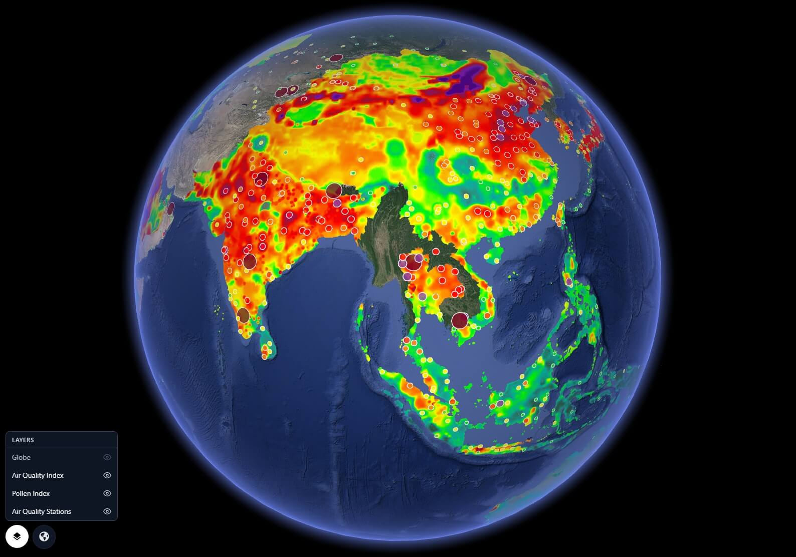
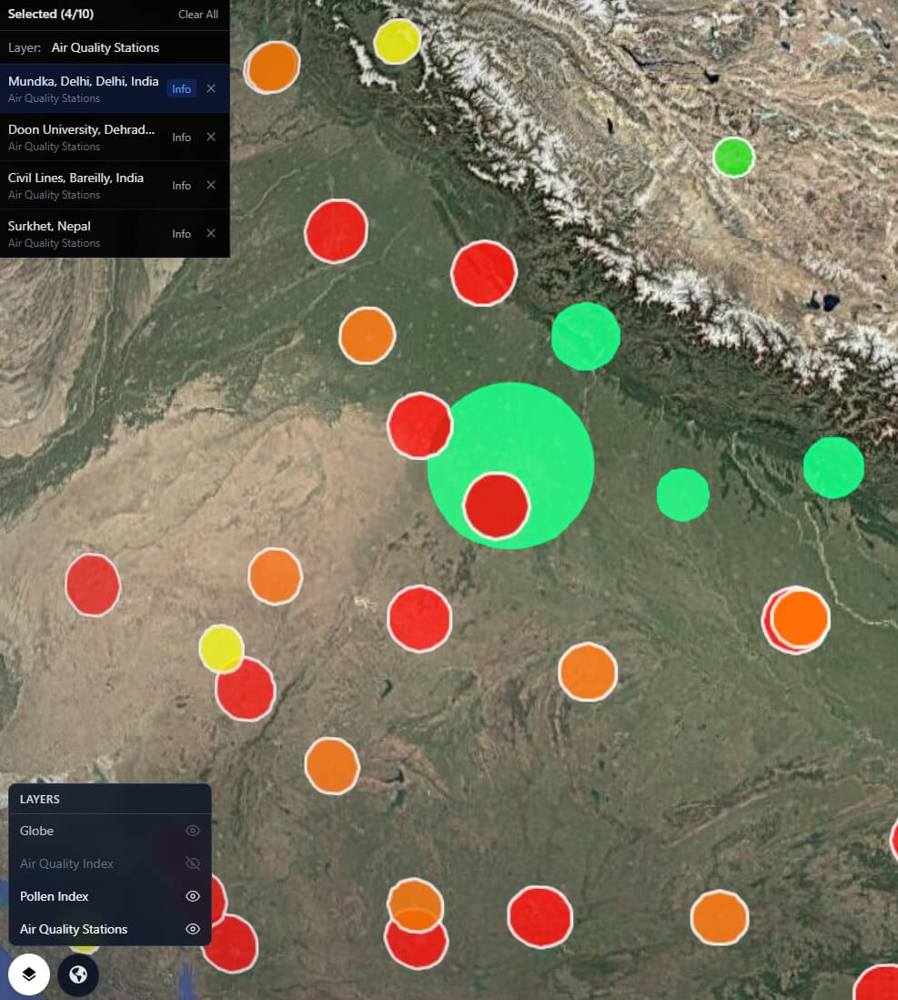
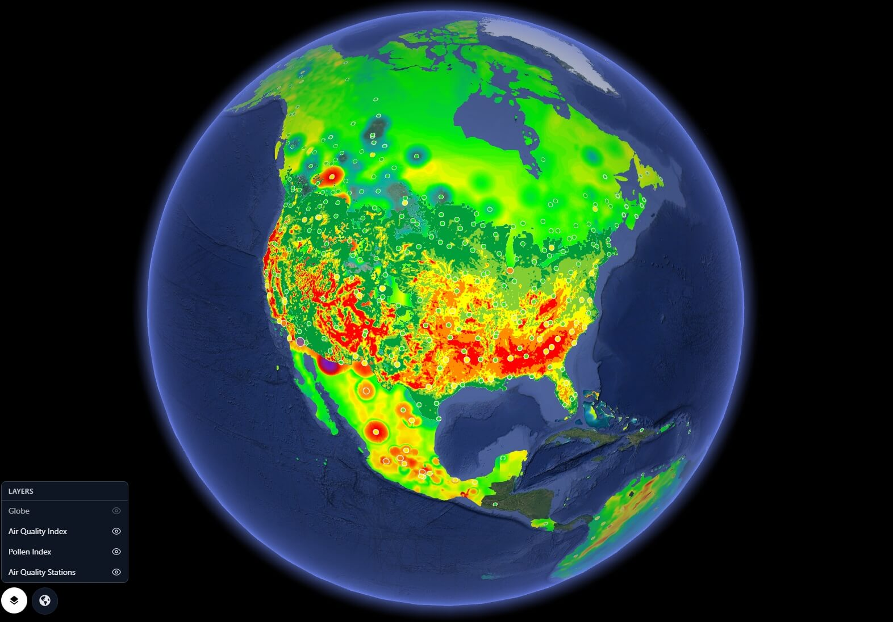
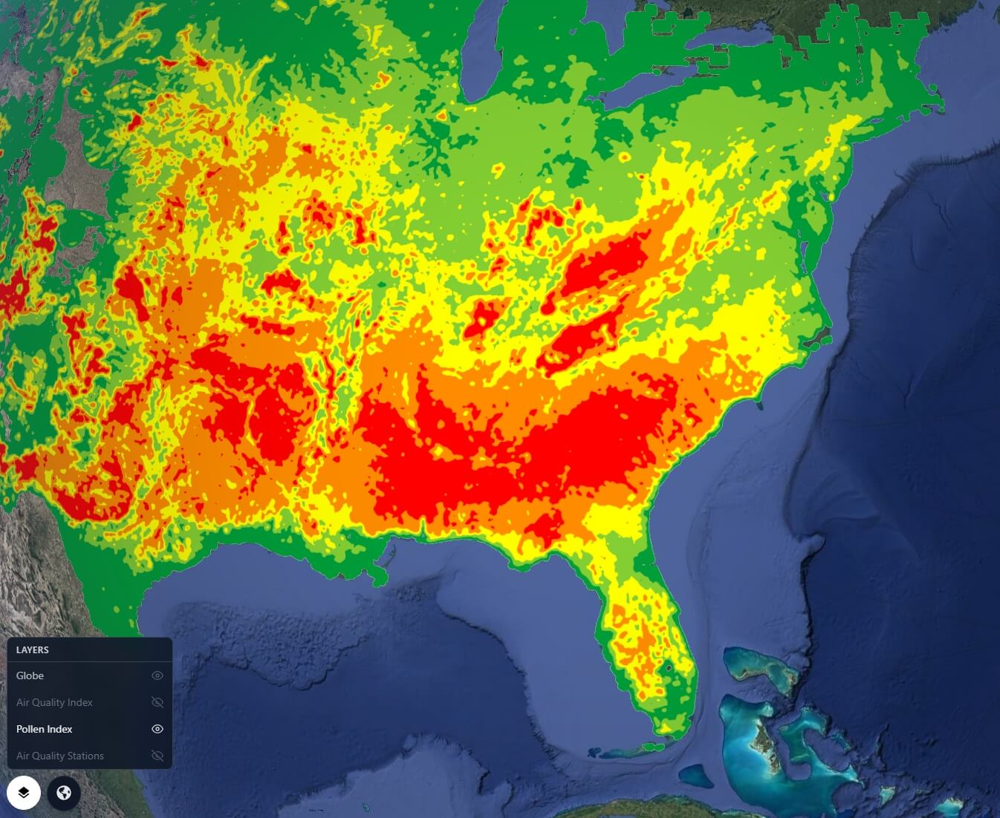

Air Quality, Pollen & Stations on the Globe
Live Air Quality Index heatmap, Universal Pollen Index, and 30,000+ ground-level monitoring stations — three environmental layers on one 3D globe, updated in real time.
GRIP 3D layers three live environmental data streams onto a single interactive 3D globe: a global Air Quality Index heatmap with PM2.5, PM10, NO₂, O₃, and CO concentrations interpolated across the Earth's surface; a Universal Pollen Index covering Tree, Grass, and Weed pollen across 65+ countries at 1km resolution; and a live network of 30,000+ air quality monitoring stations from the OpenAQ global database. Teams can toggle any layer, click any station dot for live readings, and zoom from planetary heatmap to city-level sensor data in seconds. Built for health, environmental, government, logistics, and enterprise teams who need to understand air quality as a global operational reality — not a local dashboard.

Air quality data is scattered across national agencies, monitoring networks, and separate pollen trackers — none of them spatially connected. You cannot see the global pattern when your tools only show your country.
- AQI data is locked inside national or regional portals
- Pollen and air quality are never visualized on the same layer
- Station networks are invisible — no spatial view of coverage gaps
- Decision-makers cannot see cross-border pollution movement
GRIP 3D fuses AQI heatmap, pollen index tiles, and live station network into three toggleable layers on one globe — turning fragmented environmental data into a unified planetary intelligence view.
- Global AQI heatmap interpolated from real-time station readings
- Pollen Index tiles (Tree, Grass, Weed) draped over the 3D globe surface
- 30,000+ OpenAQ stations plotted as clickable geo-located dots
- Drill from global heatmap to individual station readings in one click
Why this works at global scale
The Three Layers
- Full-globe AQI heatmap interpolated from ground station readings
- Color scale: Green (Good) → Yellow → Orange → Red → Purple → Maroon (Hazardous)
- Drill down to individual pollutant concentrations: PM2.5, PM10, NO₂, O₃, CO, SO₂
- Cross-border pollution corridors visible — Indo-Gangetic Plain, Saharan dust, Southeast Asia burning season
- Hourly updates — track pollution events as they develop in real time
- 0–50 · Good — Air quality satisfactory
- 51–100 · Moderate — Acceptable for most
- 101–150 · Unhealthy for Sensitive Groups
- 151–200 · Unhealthy — Everyone may be affected
- 201–300 · Very Unhealthy
- 301+ · Hazardous — Emergency conditions
- Heatmap tiles for Tree, Grass, and Weed pollen draped on 3D globe surface
- Universal Pollen Index (UPI) scale 0–5: None → Very Low → Low → Medium → High → Very High
- 5-day forecast — see how pollen season is evolving over the next week
- Up to 15 plant species: Birch, Oak, Olive, Cypress, Grass, Mugwort, Ragweed, and more
- Health recommendations per location and pollen type — surfaced in click panel
- Every OpenAQ station plotted as a geo-located dot on the globe
- Dot colour encodes current AQI level — green to maroon at a glance
- Click any station: live readings for PM2.5, PM10, NO₂, O₃, CO, SO₂
- Station metadata: name, operator, country, last updated timestamp
- Coverage gap layer — regions without monitoring stations highlighted
- PM2.5 — Fine particulate matter (µg/m³)
- PM10 — Coarse particulate matter (µg/m³)
- NO₂ — Nitrogen dioxide (ppb)
- O₃ — Ground-level ozone (ppb)
- CO — Carbon monoxide (ppm)
- SO₂ — Sulfur dioxide (ppb)
Capabilities
- Three live environmental layers toggleable independently on a single 3D globe
- Global AQI heatmap with pollutant drill-down — PM2.5, PM10, NO₂, O₃, CO, SO₂
- Pollen Index heatmap tiles (Tree, Grass, Weed) at 1km resolution over 65+ countries
- 5-day pollen forecast per location surfaced in click panel with health recommendations
- 30,000+ OpenAQ monitoring stations as clickable geo-located points with live readings
- Cross-layer correlation — toggle AQI and pollen simultaneously to see compound risk zones
- Coverage gap visualization — identify regions without any active monitoring
- APIs for custom station ingestion — connect private sensor networks alongside public data
API Stack
GRIP 3D UC13 is powered by three open or publicly available environmental APIs, fused into a unified globe layer system.
https://api.openaq.org/v3
| Endpoint | Used for | Returns |
|---|---|---|
/locations?limit=1000&has_geo=true |
Plot all stations on globe | id, name, coordinates, country, last updated |
/locations/{id}/latest |
Live readings on station click | PM2.5, PM10, NO₂, O₃, CO, SO₂ with timestamps |
/measurements?location_id={id}&limit=24 |
24h station chart in click panel | Hourly readings per pollutant for trend view |
/countries |
Country filter for station layer | All countries with station counts and codes |
/parameters |
Pollutant filter selector | All measurable parameters with units |
https://pollen.googleapis.com/v1
| Endpoint | Used for | Returns |
|---|---|---|
/mapTypes/{TREE|GRASS|WEED}/heatmapTiles/{z}/{x}/{y} |
Pollen heatmap tiles on globe surface | PNG tile with UPI colour-coded pollen level |
/forecast:lookup?location.lat=&location.lng=&days=5 |
5-day pollen forecast in click panel | Daily UPI per pollen type, health recommendations, plant info |
https://air-quality-api.open-meteo.com/v1/air-quality
| Parameter | Used for | Source |
|---|---|---|
&hourly=pm2_5,pm10,nitrogen_dioxide,ozone |
AQI heatmap interpolation grid | CAMS European 11km + CAMS Global 45km forecast |
&hourly=carbon_monoxide,sulphur_dioxide,dust |
Additional pollutant layers | CAMS Global atmospheric composition model |
&hourly=european_aqi,us_aqi |
AQI heatmap colour scale calculation | Standardised EU & US AQI index values per grid cell |
&hourly=alder_pollen,birch_pollen,grass_pollen,mugwort_pollen,olive_pollen,ragweed_pollen |
Supplementary pollen layer species | CAMS European pollen forecast model |
Who Uses This
- Public Health & Government — Monitor national air quality at a glance; identify pollution hotspots and cross-border events requiring policy response
- Healthcare & Pharma — Layer AQI and pollen to model respiratory disease burden by region and season; target patient alerts geographically
- Logistics & Aviation — Overlay AQI with flight corridors; monitor dust and pollution events that affect visibility and operations
- Real Estate & Urban Planning — AQI and station coverage as a site selection layer — identify clean-air zones vs chronic pollution areas
- Environmental Researchers — A global canvas for pollution correlation studies — AQI, pollen, and station density on one spatial view
- Media & Journalism — Visualize air quality crises as they unfold — wildfires, industrial accidents, seasonal smog — on a globe anyone can understand
- Allergy & Wellness Apps — Embed live pollen and AQI globe widgets into consumer health products powered by the GRIP 3D API layer
- ESG & Sustainability Teams — Map air quality against operations and supply chain footprint; benchmark environmental performance by region
Platform Views



Open for consulting and partner integrations
If you want this use case mapped to your data sources, we can deliver a fast prototype and integration plan — including layers, APIs, and deployment options.